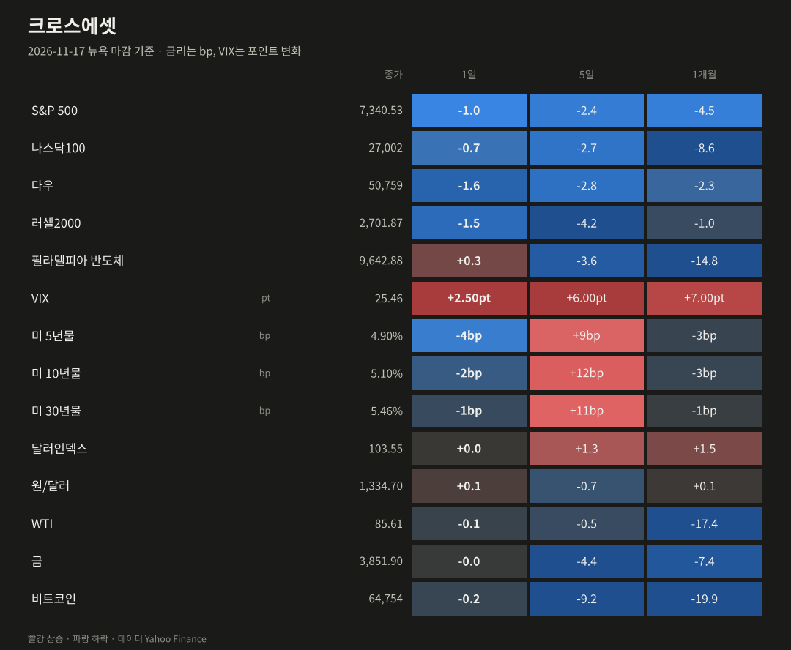
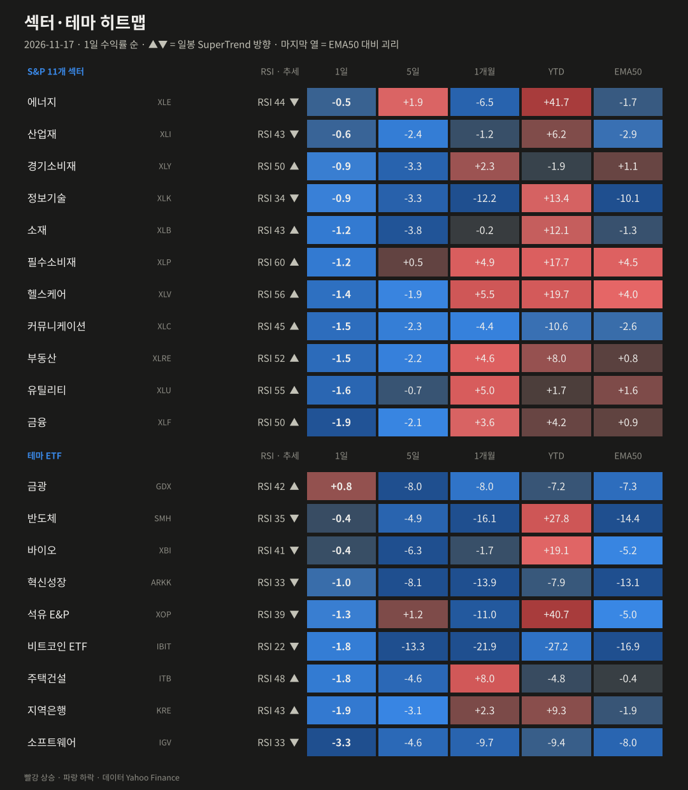
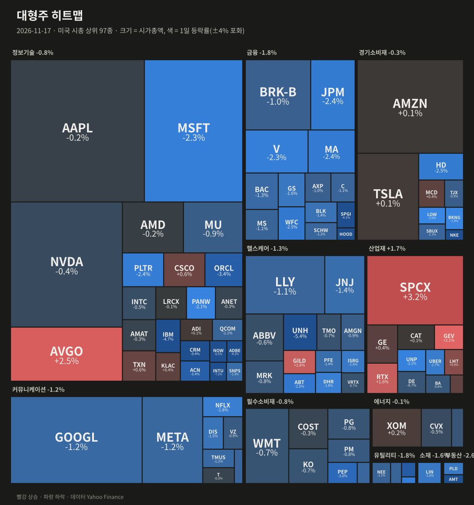
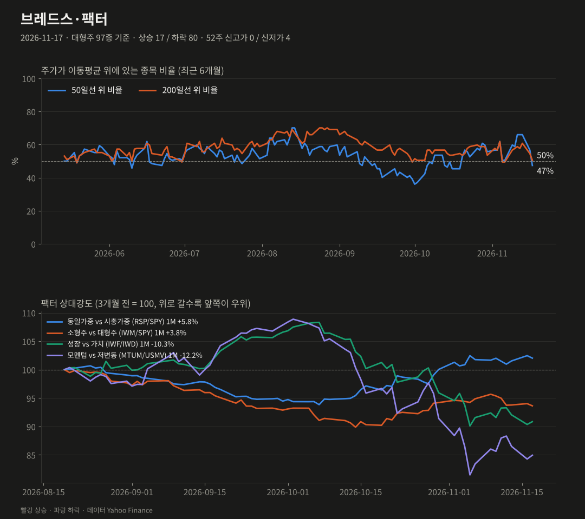
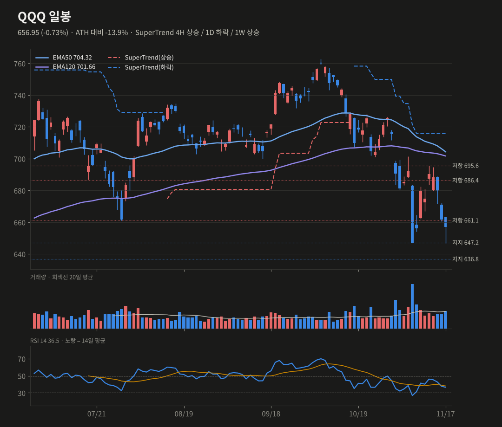
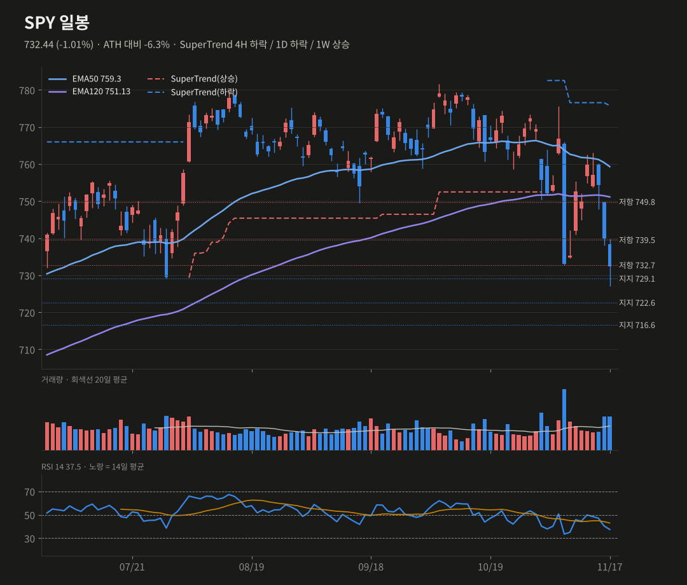
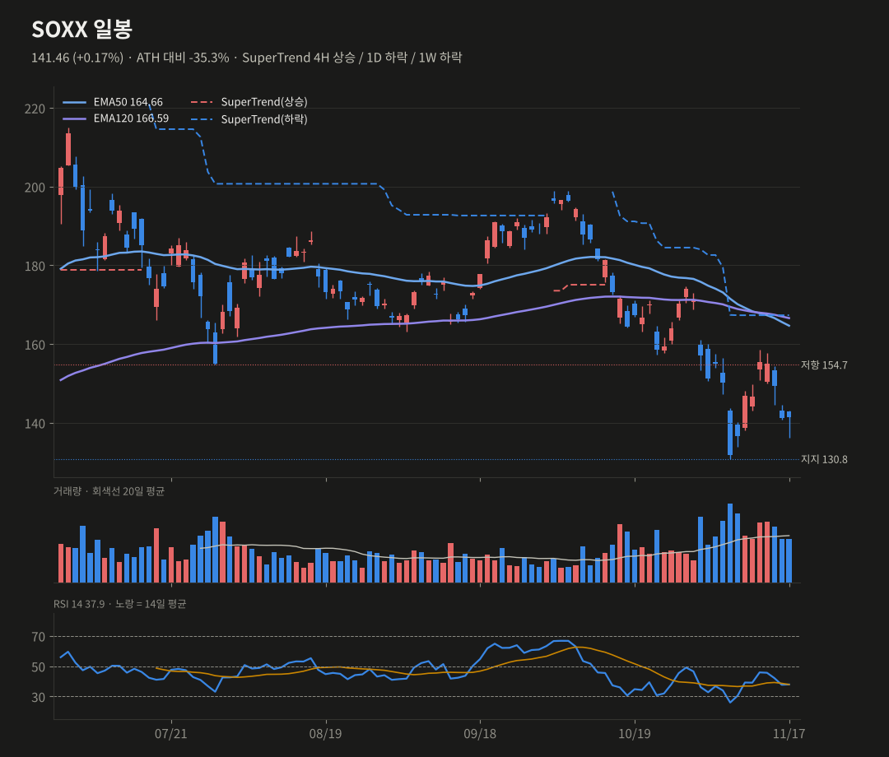
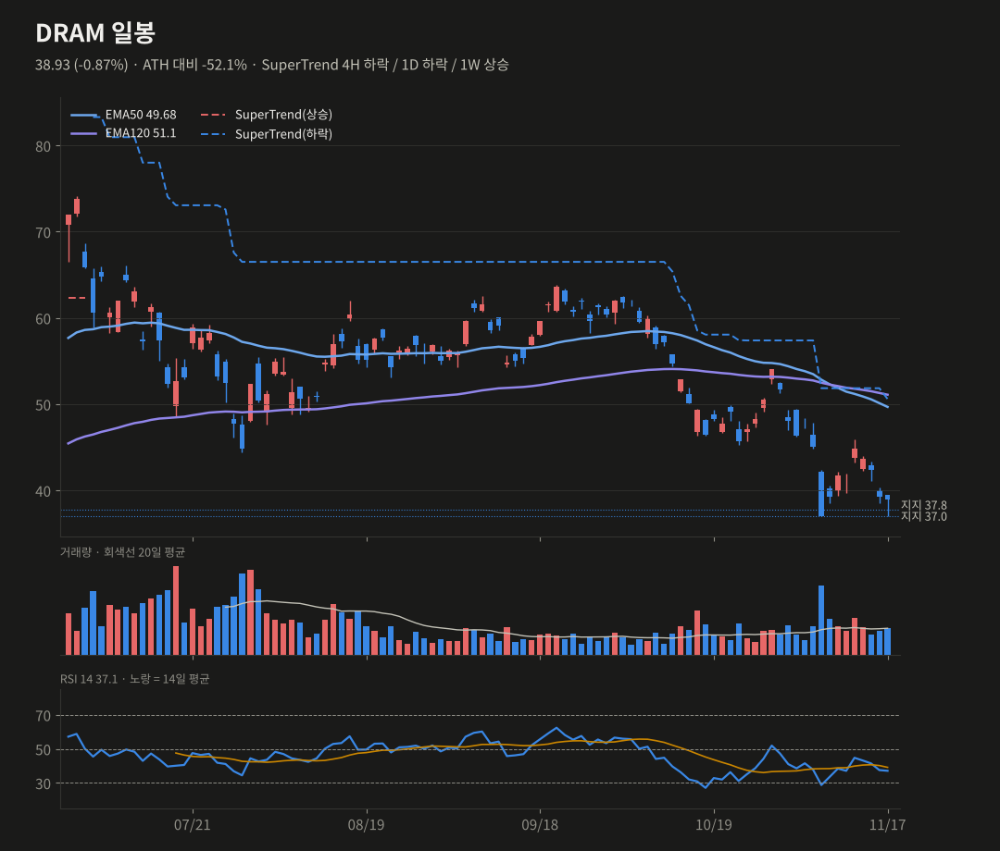

미증시 마감 브리핑
11/17(화) 뉴욕 마감 기준 · 생성 2026-11-18 07:41 KST
소프트웨어 급락에 다우 −1.6%, S&P −1.0%로 밀렸지만, 장 마감 후 엔비디아가 실적·가이던스 모두 크게 웃돌아 시간외 반도체가 반등 중이에요.
S&P 5007,340.53-1.03%
나스닥10027,002-0.72%
다우50,759-1.64%
러셀20002,701.87-1.50%
반도체(SOX)9,642.88+0.34%
VIX25.46+2.50pt
미 10년물5.10%-1.80bp
원/달러1,334.70+0.11%
요약
- 앤트로픽 상장을 앞두고 소프트웨어가 급락했어요(CRM −9.5%). 오른 종목은 17/97로 약했어요.
- 엔비디아 매출 1,158억 달러(+103%), 4분기 가이던스 1,300억 달러로 시간외 +3.6%예요.
- 시간외 SOXX +2.8%, QQQ +1.0%로 반도체 중심 반등이 예상돼요.
- QQQ 649.6, SPY 724.6이 지지선이고, 내일(11/19) 앤트로픽이 나스닥에 상장해요.
종합 판단
AI가 소프트웨어를 대체한다는 공포와 금리 5.1%가 겹쳐 방어주까지 함께 빠진 하루였어요. 엔비디아가 매출 +103%에 4분기 1,300억 달러 가이던스로 'AI 수요 둔화' 우려를 정면으로 반박해 시간외 반도체가 반등 중이에요. 다만 브레드스가 이틀 연속 무너져(오른 종목 17개), 반등이 반도체로만 좁게 이어질 가능성이 커요. 스윙 확률은 그대로 두고 단기만 올렸어요.
AI가 소프트웨어를 대체한다는 공포와 금리 5.1%가 겹쳐 방어주까지 함께 빠진 하루였어요. 엔비디아가 매출 +103%에 4분기 1,300억 달러 가이던스로 'AI 수요 둔화' 우려를 정면으로 반박해 시간외 반도체가 반등 중이에요. 다만 브레드스가 이틀 연속 무너져(오른 종목 17개), 반등이 반도체로만 좁게 이어질 가능성이 커요. 스윙 확률은 그대로 두고 단기만 올렸어요.
무엇이 시장을 움직였나
- 소프트웨어 투매: CRM −9.5%(거래량 2배), INTU −7.2%, NOW −6.5%, IBM −4.7%였어요. 앤트로픽 상장(11/19 나스닥, 공모가 70~78달러)을 앞두고 'AI가 소프트웨어를 대체한다'는 우려가 다시 커졌어요(IGV −3.3%).
- 방어주도 하락: UNH −5.4% 등 건강보험주가 약했고, 금융(−1.9%)·유틸리티(−1.6%)가 가장 많이 빠졌어요. 반도체(SOX +0.3%)만 엔비디아 실적 기대로 버텼어요.
- 금리·변동성: 10년물 5.10%(−1.8bp), VIX 25.5(+2.5pt)예요. 12월 25bp 인상 확률은 95%예요(CME FedWatch).
- 엔비디아 실적(장 마감 후): 매출 1,158억 달러(+103%), 데이터센터 1,076억 달러(+110%), 총이익률 74.9%였어요. 4분기 가이던스는 1,300억 달러(±3%, 1주 추가, 중국 데이터센터 매출 제외)예요. 크레스 임시 CEO는 '베라 루빈이 폭발적으로 출발했다'고 했어요.
장 마감 후·시간외
- NVDA 시간외 +3.6%(155.5 → 161.1), AMD +3.4%, MU +2.8%예요.
- QQQ 663.8(+1.0%), SOXX 145.4(+2.8%), DRAM 40.4(+3.7%), SPY 736.6(+0.6%)이에요. QQQ는 661.1 저항 위로, SPY는 732.7 위로 복귀 출발이 예상돼요.

| 자산 | 종가 | 1일 | 5일 | 1개월 |
|---|---|---|---|---|
| S&P 500 | 7340.53 | -1.03% | -2.40% | -4.55% |
| 나스닥100 | 27001.79 | -0.72% | -2.66% | -8.56% |
| 다우 | 50759.42 | -1.64% | -2.82% | -2.32% |
| 러셀2000 | 2701.87 | -1.50% | -4.24% | -0.97% |
| 필라델피아 반도체 | 9642.88 | +0.34% | -3.56% | -14.79% |
| VIX | 25.46 | +2.50pt | +6.00pt | +7.00pt |
| 미 5년물 | 4.9 | -3.5bp | +9.3bp | -2.9bp |
| 미 10년물 | 5.103 | -1.8bp | +12.0bp | -3.3bp |
| 미 30년물 | 5.458 | -0.9bp | +10.8bp | -1.4bp |
| 달러인덱스 | 103.55 | +0.00% | +1.29% | +1.54% |
| 원/달러 | 1334.7 | +0.11% | -0.68% | +0.10% |
| WTI | 85.61 | -0.13% | -0.50% | -17.41% |
| 금 | 3851.9 | -0.03% | -4.42% | -7.41% |
| 비트코인 | 64754.48 | -0.16% | -9.23% | -19.86% |

| 섹터·테마 | 1일 | 5일 | 1개월 | YTD | RSI | 일봉 추세 |
|---|---|---|---|---|---|---|
| 금광 GDX | +0.79% | -8.00% | -7.98% | -7.2% | 42 | 상승 |
| 반도체 SMH | -0.39% | -4.87% | -16.11% | +27.8% | 35 | 하락 |
| 바이오 XBI | -0.41% | -6.31% | -1.74% | +19.1% | 41 | 하락 |
| 에너지 XLE | -0.52% | +1.85% | -6.55% | +41.7% | 44 | 하락 |
| 산업재 XLI | -0.55% | -2.36% | -1.16% | +6.2% | 43 | 하락 |
| 경기소비재 XLY | -0.89% | -3.26% | +2.31% | -1.9% | 50 | 상승 |
| 정보기술 XLK | -0.91% | -3.34% | -12.21% | +13.4% | 34 | 하락 |
| 혁신성장 ARKK | -0.99% | -8.12% | -13.94% | -7.9% | 33 | 하락 |
| 소재 XLB | -1.22% | -3.80% | -0.22% | +12.1% | 43 | 상승 |
| 필수소비재 XLP | -1.23% | +0.47% | +4.87% | +17.7% | 60 | 상승 |
| 석유 E&P XOP | -1.32% | +1.19% | -10.96% | +40.7% | 39 | 하락 |
| 헬스케어 XLV | -1.41% | -1.93% | +5.46% | +19.7% | 56 | 상승 |
| 커뮤니케이션 XLC | -1.46% | -2.32% | -4.39% | -10.6% | 45 | 상승 |
| 부동산 XLRE | -1.49% | -2.22% | +4.61% | +8.0% | 52 | 상승 |
| 유틸리티 XLU | -1.59% | -0.71% | +4.98% | +1.7% | 55 | 상승 |
| 비트코인 ETF IBIT | -1.77% | -13.29% | -21.94% | -27.2% | 22 | 하락 |
| 주택건설 ITB | -1.81% | -4.64% | +7.99% | -4.8% | 48 | 상승 |
| 지역은행 KRE | -1.86% | -3.06% | +2.30% | +9.3% | 43 | 상승 |
| 금융 XLF | -1.91% | -2.09% | +3.65% | +4.2% | 50 | 상승 |
| 소프트웨어 IGV | -3.29% | -4.57% | -9.67% | -9.4% | 33 | 하락 |

| 상승 상위 | 1일 | 거래량(20일 대비) | 하락 상위 | 1일 | 거래량 |
|---|---|---|---|---|---|
| SPCX | +3.16% | x0.76 | CRM | -9.45% | x1.98 |
| AVGO | +2.46% | x0.94 | INTU | -7.17% | x1.17 |
| GEV | +2.14% | x1.14 | NOW | -6.51% | x1.19 |
| RTX | +1.60% | x0.98 | NKE | -6.30% | x3.07 |
| GILD | +1.60% | x0.96 | UNH | -5.42% | x1.62 |
| LMT | +0.88% | x0.42 | IBM | -4.71% | x1.01 |

대형주 97종: 상승 17 / 하락 80 · 50일선 위 47.4% (전일 56.7%, 5일 전 58.8%) · 200일선 위 50.5% · 52주 신고가 0 / 신저가 4
오른 종목 17, 내린 종목 80으로 이틀 연속 폭넓은 매도였어요. SMA50 위 종목 비율은 47.4%로 11월 처음 절반 아래로 내려갔고, 52주 신고가는 0개였어요. 동일가중(RSP −1.45%)이 시총가중보다 약해 방어 업종까지 같이 빠졌어요.
| 팩터 스프레드 | 1일 | 5일 | 1개월 |
|---|---|---|---|
| 동일가중 vs 시총가중 (RSP/SPY) | -0.44% | +0.01% | +5.80% |
| 소형주 vs 대형주 (IWM/SPY) | -0.41% | -1.82% | +3.79% |
| 성장 vs 가치 (IWF/IWD) | +0.54% | -0.80% | -10.28% |
| 모멘텀 vs 저변동 (MTUM/USMV) | +0.79% | -0.81% | -12.15% |
기술적 분석 · 확률
TradingView 설정과 맞춘 지표(EMA50·EMA120, SuperTrend ATR20×4, RSI14, MACD 12/26/9). 확률은 차트 기반 추정치예요.
QQQ 656.95 -0.73%
SuperTrend 4H 상승 / 1D 하락 / 1W 상승 · RSI 36.53
단기 반등 55% (+5) · 스윙 상승 30%
정규장은 661.1을 내주고 657.0으로 마감했어요. 4H MACD는 데드크로스, 일봉 히스토그램은 확대됐어요(−1.46). 시간외 663.8로 661.1을 되찾아 엔비디아 호재가 단기 반등을 이끌 수 있어요. 주봉 SuperTrend(649.6)가 마지노선이에요.
상방 671.2(주봉 EMA50) 회복 → 686.4
하방 649.6 이탈 → 636.8, 629.2
SuperTrend 4H 상승 / 1D 하락 / 1W 상승 · RSI 36.53
단기 반등 55% (+5) · 스윙 상승 30%
정규장은 661.1을 내주고 657.0으로 마감했어요. 4H MACD는 데드크로스, 일봉 히스토그램은 확대됐어요(−1.46). 시간외 663.8로 661.1을 되찾아 엔비디아 호재가 단기 반등을 이끌 수 있어요. 주봉 SuperTrend(649.6)가 마지노선이에요.
상방 671.2(주봉 EMA50) 회복 → 686.4
하방 649.6 이탈 → 636.8, 629.2
SPY 732.44 -1.01%
SuperTrend 4H 하락 / 1D 하락 / 1W 상승 · RSI 37.47
단기 반등 45% · 스윙 상승 35%
732.7 지지를 잃고 732.4로 마감했어요. 일봉 RSI 37.5, 4H RSI 35.8로 과매도 쪽이에요. 브레드스가 약해(17/80) 반등이 반도체에만 쏠릴 수 있어요. 주봉 EMA50(724.6)이 다음 방어선이에요.
상방 739.5 회복 → 749.8, 751.1(EMA120)
하방 729.1 이탈 → 724.6(주봉 EMA50), 716.6
SuperTrend 4H 하락 / 1D 하락 / 1W 상승 · RSI 37.47
단기 반등 45% · 스윙 상승 35%
732.7 지지를 잃고 732.4로 마감했어요. 일봉 RSI 37.5, 4H RSI 35.8로 과매도 쪽이에요. 브레드스가 약해(17/80) 반등이 반도체에만 쏠릴 수 있어요. 주봉 EMA50(724.6)이 다음 방어선이에요.
상방 739.5 회복 → 749.8, 751.1(EMA120)
하방 729.1 이탈 → 724.6(주봉 EMA50), 716.6
SOXX 141.46 +0.17%
SuperTrend 4H 상승 / 1D 하락 / 1W 하락 · RSI 37.93
단기 반등 55% (+10) · 스윙 상승 30%
정규장 +0.2%로 버텼고, 엔비디아 호실적에 시간외 145.4(+2.8%)예요. 4H MACD는 데드크로스지만 일봉 RSI는 평균선 위(37.9)예요. 주봉 EMA50(151.2)과 154.7이 반등 목표 겸 저항이에요.
상방 151.2 회복 → 154.7, 159.3
하방 134.5(4H SuperTrend) 이탈 → 130.8
SuperTrend 4H 상승 / 1D 하락 / 1W 하락 · RSI 37.93
단기 반등 55% (+10) · 스윙 상승 30%
정규장 +0.2%로 버텼고, 엔비디아 호실적에 시간외 145.4(+2.8%)예요. 4H MACD는 데드크로스지만 일봉 RSI는 평균선 위(37.9)예요. 주봉 EMA50(151.2)과 154.7이 반등 목표 겸 저항이에요.
상방 151.2 회복 → 154.7, 159.3
하방 134.5(4H SuperTrend) 이탈 → 130.8
DRAM 38.93 -0.87%
SuperTrend 4H 하락 / 1D 하락 / 1W 상승 · RSI 37.12
단기 반등 50% (+5) · 스윙 상승 25%
주봉 EMA120(38.5) 바로 위(38.9)에서 버텼고, 시간외 40.4(+3.7%)예요. 일봉·4H 모두 SuperTrend 하락이라 41.5~44.4 저항대를 넘어야 추세가 개선돼요.
상방 41.5 돌파 → 44.4, 46.1(4H SuperTrend)
하방 38.5 이탈 → 37.0, 주봉 SuperTrend 29.4
SuperTrend 4H 하락 / 1D 하락 / 1W 상승 · RSI 37.12
단기 반등 50% (+5) · 스윙 상승 25%
주봉 EMA120(38.5) 바로 위(38.9)에서 버텼고, 시간외 40.4(+3.7%)예요. 일봉·4H 모두 SuperTrend 하락이라 41.5~44.4 저항대를 넘어야 추세가 개선돼요.
상방 41.5 돌파 → 44.4, 46.1(4H SuperTrend)
하방 38.5 이탈 → 37.0, 주봉 SuperTrend 29.4




일정
- 11/19 앤트로픽 나스닥 상장(가격 결정 11/18)
- 엔비디아 실적 반영 첫날
- 12/8~9 FOMC(25bp 인상 95%)
출처
- NVIDIA Announces Financial Results for Third Quarter Fiscal 2027 (NVIDIA)
- Wall Street Slips Ahead of Nvidia Results, Anthropic IPO (GV Wire)
- Stock market today: Dow sinks 850 points, S&P 500 and Nasdaq drop with focus on Nvidia earnings (Yahoo Finance)
데이터 Yahoo Finance·Nasdaq. 색은 한국식(빨강 상승·파랑 하락). 투자 판단의 참고 자료예요. 지난 브리핑